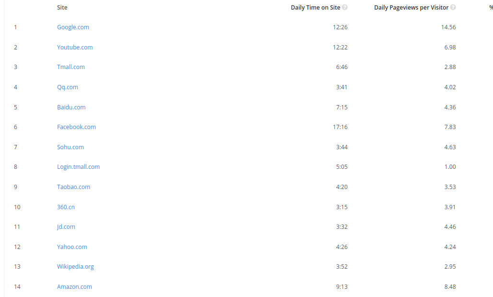

<br><br> __Mirror mirror on the wall, what's the most important open source project of them all?__ -- - Are you asking about economic impact? Then it's probably Linux, or maybe the Apache Web server. -- - Are you asking about user base? In that case I'm thinking Google's Android, or Mozilla. -- - But if you're talking about active participation, getting people's hands on the guts of the thing, having them donate that back to the commons, and fulfilling the idea behind open source, there can be only one answer. __Wikipedia.__ -- .footnote[ [The importance of Wikipedia](https://opensource.com/business/11/11/importance-wikipedia), 30 Nov 2011, Dana Blankenhorn ] --- class: center, middle ## CSCI 395.86 Open Source Software Development <br> ## Open Encyclopedias: ### Wikipedia .author[ Stewart Weiss <br> ] .license[ This work is based on slides written by Joanna Klukowska, released under a [CC BY 4.0](https://creativecommons.org/licenses/by/4.0/) license,<br> which may be found at https://joannakl.github.io/ossd_s19/slides/open_encyclopedia.html. These slides are released under a [Creative Commons Attribution-ShareAlike 4.0 International License](https://creativecommons.org/licenses/by/4.0/). ] --- # So What is Wikipedia? According to [Wikipedia](https://en.wikipedia.org/) itself, Wikipedia - "is a multilingual online encyclopedia with exclusively free content and no ads, based on open collaboration ..." and is the largest and most popular general reference work on the Internet." (https://en.wikipedia.org/wiki/Wikipedia , retrieved April 10, 2019) -- - It was launched on 15 January 2001 by Jimmy Wales and Larry Sanger. -- - It is owned by the WikiMedia Foundation. -- - It is a freely licensed encylopedia, using the [Creative Commons Attribution 3.0 International License](https://creativecommons.org/licenses/by/3.0/) -- - It is written in __wiki__ software called __Wikitext__ or __Wiki Markup__ (using the MediaWiki engine). -- - It has an all volunteer staff. -- - It is funded entirely by public donations. --- # Wikipedia Content - It strives for a neutral point of view. - Most edits are from registered users (people who created accounts). Sometimes people vandalize the content, but it is caught very quickly usually. See [https://flip.it/DlSvQA](https://flip.it/DlSvQA) for an example. - As is true of all encyclopedias, it is not usually appropriate to use as a citable source, and should not be relied upon as authoritative. - It was originally in English. - As of April 2019, there are more than 300 different language editions of Wikipedia. - The English-language edition accounts for about 12% of all articles in all language editions of Wikipedia. --- # Some Wikipedia Statistics (as of March 4, 2020)<span class="super">1</span> - Total number of articles in all languages: <span class="standout">49,899,413</span> - English articles: <span class="standout">6,026,266</span> - Total English edition pages: <span class="standout">49,766,345</span> - Total English registered users: <span class="standout">38,464,243</span> - Total administrators of English Wikipedia: <span class="standout"> 1,144</span> - Total edits of English Wikipedia since it was founded: <span class="standout"> 939,214,577</span> .footnote[ 1 source: https://en.wikipedia.org/wiki/Wikipedia:Size_of_Wikipedia ] --- # Wikipedia Ranking on Alexa  --- # The Wikimedia Foundation and Its Projects Wikipedia is not the only project run by the Wikimedia Foundation: https://en.wikipedia.org/wiki/Wikimedia_Foundation#Projects_and_initiatives Can you name a few others? -- There are over ... edits to the Wikimedia projects so far (pick the closest answer). - 1,000,000 - 10,000,000 - 100,000,000 - 1,000,000,000 -- over 3,700,000,000 and going up fast, see https://tools.wmflabs.org/wmcounter/ --- # Wikipedia Principles ### The Five Pillars ( See https://en.wikipedia.org/wiki/Wikipedia:Five_pillars) These are the fundamental principles that underly Wikipedia<span class="super">1</span>: | | | |-----|:------------------| |<img src="img/47px-Encyclopedia_icon.svg.png" width="50" > | Wikipedia is an encyclopedia | |<img src="img/47px-Scale_icon_green.svg.png" width="50" > | Wikipedia is written from a neutral point of view | |<img src="img/47px-Jigsaw_piece_yellow_01.svg.png" width="50" > | Wikipedia is free content that anyone can use, edit, and distribute | |<img src="img/47px-Smiley_icon_orange.svg.png" width="50" > | Wikipedia's editors should treat each other with respect and civility| |<img src="img/47px-Light_bulb_icon_red.svg.png" width="50" > | Wikipedia has no firm rules | The English Wikipedia does not have a single, definitive statement of the community's values and principles. Editors have written summaries of these values and principles and essays about what they think is important, which can be found at [Wikipedia Principles](https://en.wikipedia.org/wiki/Wikipedia:Principles). .footnote[ 1 All icons on this page are copies of images available from Wikipedia under a [Creative Commons Attribution 3.0 International License](https://creativecommons.org/licenses/by/3.0/) license. ] --- # Wikipedia Policies - Wikipedia has policies and guidelines for its editors and contributors and its community. There is an extensive set of pages at [Wikipedia Policies and Guidelines](https://en.wikipedia.org/wiki/Wikipedia:List_of_policies_and_guidelines) that describe them: .left-column2[ #### Policies: - Content policies - Legal policies - Procedural policies - Enforcement policies - Conduct policies - Deletion policies ] .right-column2[ #### Guidelines: - Content guidelines - Editing guidelines - Notability guidelines - Style guidelines - Behavioral guidelines - Deletion guidelines - Project content guidelines - Template guidelines - Naming conventions ] .below-column2[ - For example, the broad content policies include: - Neutral Point of View - Verifiability - No Original Research ] --- # Getting Started Editing - There are many pages in and outside of Wikipedia designed to help first-time editors and beginners with editing. Links to some of those pages are - [Elsevier's Guide to Editing Wikipedia Pages](http://scitechconnect.elsevier.com/resources/concise-guide-editing-wikipedia/) - [Contributing to Wikipedia](https://en.wikipedia.org/wiki/Wikipedia:Contributing_to_Wikipedia#Getting_started) - [Wikipedia Primer for Newcomers](https://en.wikipedia.org/wiki/Wikipedia:A_primer_for_newcomers) - [Help on WikiPedia Talk Pages](https://en.wikipedia.org/wiki/Help:Talk_pages) - [Wikipedia Cleanup](https://en.wikipedia.org/wiki/Wikipedia:Cleanup) - [Wikipedia Community Portal](https://en.wikipedia.org/wiki/Wikipedia:Community_portal) --- # Wikipedia ### A Collection of Wikipedia-Related Links - [The Importance of Wikipedia](https://opensource.com/business/11/11/importance-wikipedia) - [Elsevier's Guide to Editing Wikipedia Pages](http://scitechconnect.elsevier.com/resources/concise-guide-editing-wikipedia/) - [Wikipedia Statistics](https://en.wikipedia.org/wiki/Wikipedia:Statistics) - [Contributing to Wikipedia](https://en.wikipedia.org/wiki/Wikipedia:Contributing_to_Wikipedia#Getting_started) - [Wikipedia Primer for Newcomers](https://en.wikipedia.org/wiki/Wikipedia:A_primer_for_newcomers) - [Help on WikiPedia Talk Pages](https://en.wikipedia.org/wiki/Help:Talk_pages) - [Wikipedia Cleanup](https://en.wikipedia.org/wiki/Wikipedia:Cleanup) - [Wikipedia Community Portal](https://en.wikipedia.org/wiki/Wikipedia:Community_portal) - [Wikipedia List of Policies](https://en.wikipedia.org/wiki/Wikipedia:List_of_policies_and_guidelines) - [Wikipedia Policies and Guidelines](https://en.wikipedia.org/wiki/Wikipedia:Policies_and_guidelines) - [Four Tips for Creating Wikipedia Articles (from Opensource.com) ](https://opensource.com/article/16/11/4-tips-creating-wikipedia-article) - [How I Accidentally Wrote a Wikipedia Page on a layover in Dublin](https://opensource.com/article/18/4/how-i-accidentally-wrote-wikipedia-page) ---